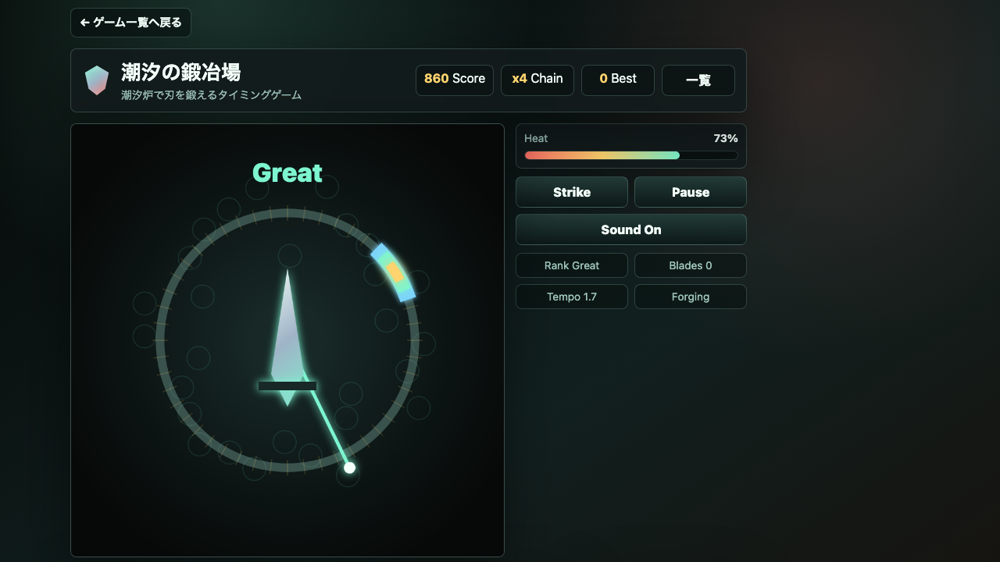

遊び方
- 動く針と判定ゾーンを見ます。
- タイミングよく入力して刃を鍛えます。
- Perfect判定を重ねて高品質な鍛造を目指します。
タイミング / 無料ブラウザゲーム
潮汐の鍛冶場は、潮汐炉で刃を鍛える無料ブラウザタイミングゲームです。針とゾーンを合わせてPerfectを重ねる、短時間で遊べるWebゲームです。

針の速度が上がる前にリズムを掴み、焦らず中央のPerfectゾーンを狙うのが高得点の近道です。
スマホ・PC対応。インストール不要で、ブラウザから無料でプレイできます。